glydraw draws SNFG glycan cartoons from glycan structure
text or glyrepr::glycan_structure() objects.
draw_cartoon() returns a ggplot2 object with class
glydraw_cartoon. You can print it directly, pass it to
save_cartoon(), or add ggplot2 layers when needed. This
vignette uses IUPAC-condensed strings because they are compact and easy
to copy into examples.
Draw one glycan
The first argument, structure, is the glycan to draw. It
can be a character string in a notation supported by
glyparse::auto_parse(), or a
glyrepr::glycan_structure() value.
n_core <- "Man(a1-3)[Man(a1-6)]Man(b1-4)GlcNAc(b1-4)GlcNAc(b1-"
draw_cartoon(n_core)For a sketch-like appearance, use draw_cartoon_sketch()
instead of draw_cartoon().
draw_cartoon_sketch(n_core)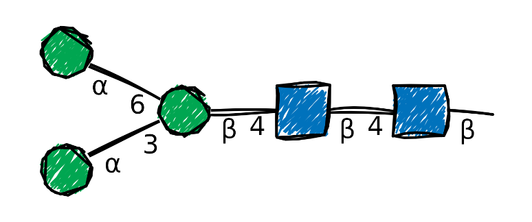
Basic options
show_linkage
show_linkage controls whether glycosidic linkage
annotations are shown. Substituent annotations are always shown.
draw_cartoon(n_core, show_linkage = FALSE)
orient
orient controls the direction in which the glycan
extends from its reducing end. Choose "left",
"right", "up", or "down"; the
default is "left".
draw_cartoon(n_core, orient = "up")
red_end annotation
red_end controls what is drawn after the reducing-end
line. Possible values are:
-
"": draw nothing (the default) -
"~": draw a wavy line - Any other text: draw that text after the line
- An amino-acid sequence: custom text with one tagged glycosite
draw_cartoon(n_core, red_end = "")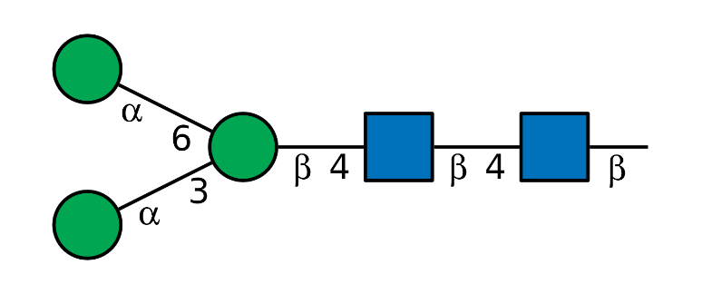
draw_cartoon(n_core, red_end = "~")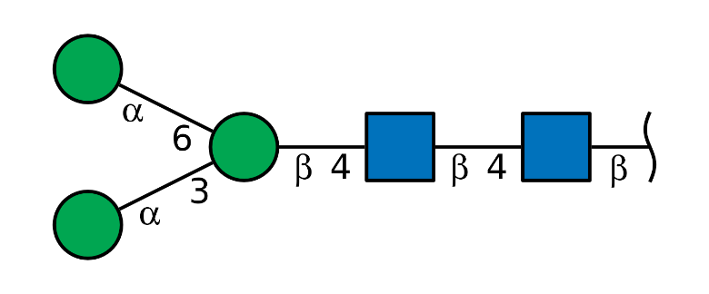
draw_cartoon(n_core, red_end = "Asn")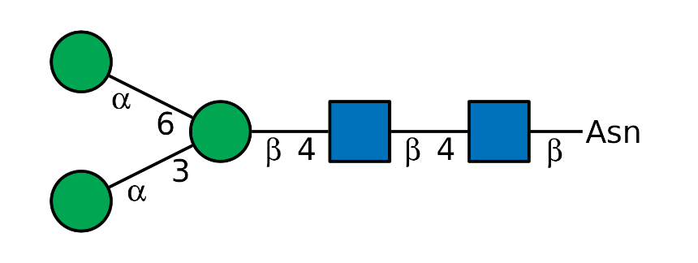
To annotate an amino-acid sequence at the reducing end, wrap the
glycosite in <site> and </site>
tags.
draw_cartoon(n_core, red_end = "ABC<site>D</site>EFJHI")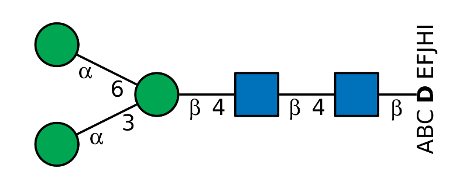
Although this notation is slightly verbose, it lets you use arbitrary characters in the sequence without ambiguity.
draw_cartoon(n_core, red_end = "<site>N</site>-X-S/T")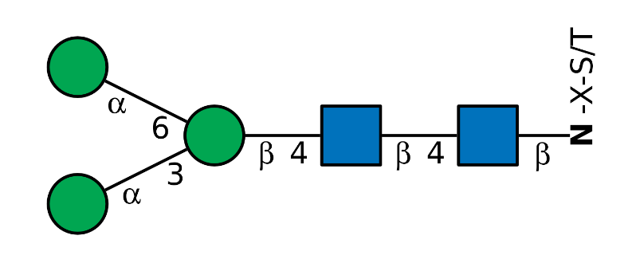
Styles
glydraw provides many additional visual options,
including linewidths, node sizes, colors, and fonts. The style system
collects these options while preserving the information conveyed by the
glycan notation.
Use the style argument to apply these customizations. By
default, style = style_glydraw(), which returns a style
object containing the available settings.
style_glydraw()
#> $fuc_orient
#> [1] "flex"
#>
#> $red_end
#> [1] ""
#>
#> $edge_linewidth
#> [1] 0.8
#>
#> $node_linewidth
#> [1] 0.8
#>
#> $node_size
#> [1] 1
#>
#> $font_family
#> [1] ""
#>
#> $colors
#> glyWhite glyBlue glyGreen glyYellow glyOrange glyPink
#> "#FFFFFF" "#0072BC" "#00A651" "#FFD400" "#F47920" "#F69EA1"
#> glyPurple glyLightBlue glyBrown glyRed
#> "#A54399" "#8FCCE9" "#A17A4D" "#ED1C24"
#>
#> $red_end_length
#> [1] 0.6
#>
#> $red_end_size
#> [1] 6
#>
#> attr(,"class")
#> [1] "glydraw_style"The style contains the following parameters:
-
fuc_orient: orientation of Fuc-like residues -
red_end: reducing-end annotation, as described above -
red_end_length: length of the reducing-end line -
red_end_size: size of custom reducing-end text -
edge_linewidth: linewidth of glycosidic linkages -
node_linewidth: linewidth of node borders -
node_size: multiplier for node size -
font_family: font family for text annotations -
colors: palette used to fill the nodes
The following sections describe these settings in more detail.
fuc_orient
fuc_orient controls how Fuc-like triangles are rotated.
The default, "flex", points non-reducing Fuc residues
toward their rendered linkage direction. Use "up" when
every Fuc triangle should point upward.
fucosylated <- "Gal(b1-3)[Fuc(a1-4)]GlcNAc(b1-"
draw_cartoon(fucosylated, style = style_glydraw(fuc_orient = "flex"))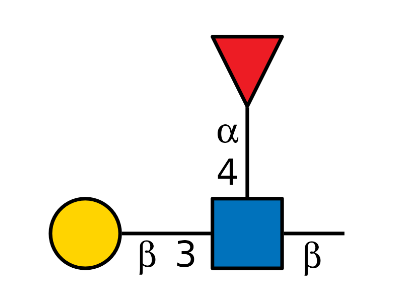
draw_cartoon(fucosylated, style = style_glydraw(fuc_orient = "up"))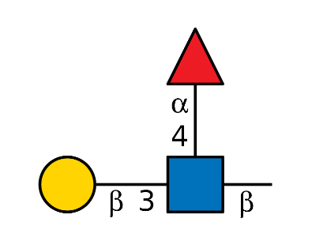
red_end in a style
This setting controls the same feature as the red_end
argument described above. It is also available in the style object so
that it can be reused across drawings. The explicit red_end
argument in draw_cartoon() overrides
style$red_end.
# The explicit argument overrides the style setting.
draw_cartoon(n_core, red_end = "Asn", style = style_glydraw(red_end = "~"))
red_end_length
red_end_length is the length of the reducing-end line in
plot-coordinate units. It can be any non-negative number. Setting it to
0 omits the line and any reducing-end wave or custom text
while retaining the core anomer annotation.
draw_cartoon(n_core, style = style_glydraw(red_end_length = 1))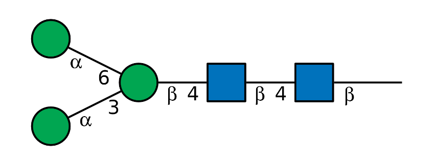
# The custom text is omitted when `red_end_length = 0`.
draw_cartoon(n_core, red_end = "Asn", style = style_glydraw(red_end_length = 0))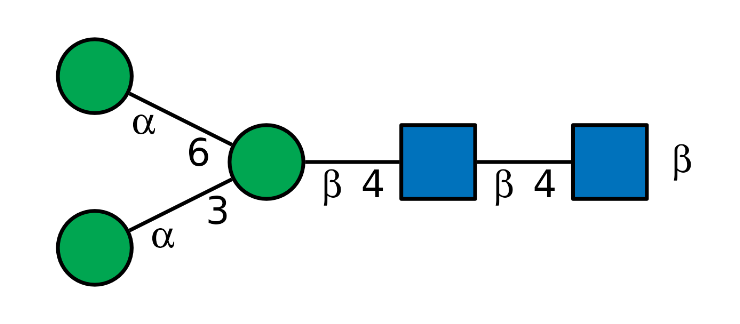
red_end_size
red_end_size controls the size of custom text passed
through red_end. It does not affect the "~"
wave.
draw_cartoon(n_core, red_end = "Asn", style = style_glydraw(red_end_size = 10))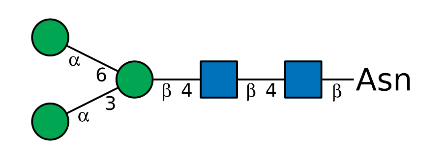
edge_linewidth and node_linewidth
edge_linewidth controls linkage line width.
node_linewidth controls the border width of residue
symbols.
draw_cartoon(
n_core,
style = style_glydraw(
edge_linewidth = 1.4,
node_linewidth = 0.4
)
)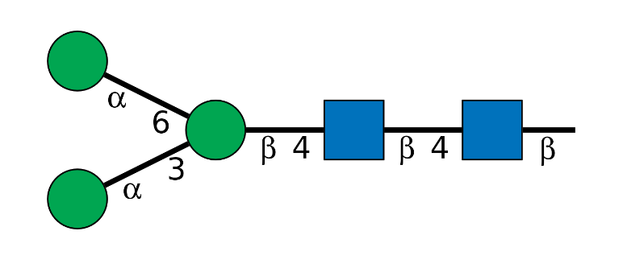
node_size
node_size is a multiplier for the default residue-symbol
size. The default is 1. Larger nodes keep the same cartoon
layout but draw larger symbols.
draw_cartoon(n_core, style = style_glydraw(node_size = 1.2))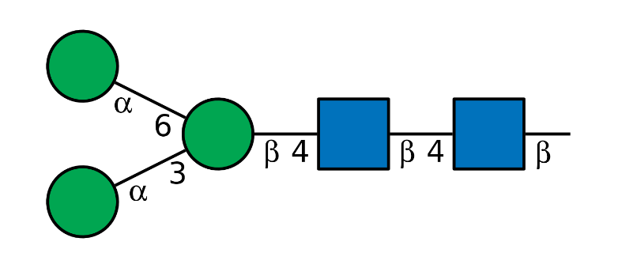
draw_cartoon(n_core, style = style_glydraw(node_size = 1.6))
#> Warning: Linkage annotations are hidden because `node_size` is larger than 1.4.
#> ℹ Set `show_linkage = FALSE` to silence this warning, or use a smaller
#> `node_size`.
Very large symbols can overlap, so values larger than 2
are rejected. Linkage annotations are hidden with a warning when the
requested node size leaves too little annotation space.
Tip: To make a compact cartoon while keeping the
symbols legible, increase node_size,
node_linewidth, and edge_linewidth. If linkage
information is not essential for the display, also set
show_linkage = FALSE. This makes sure the cartoon still
looks nice when you shrink in Adobe Illustration.
compact_style <- style_glydraw(
node_size = 1.4,
edge_linewidth = 1.5,
node_linewidth = 1.5
)
draw_cartoon(n_core, show_linkage = FALSE, style = compact_style)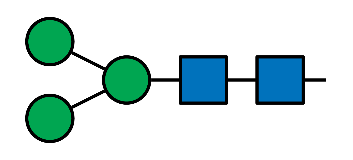
colors
colors is a complete named palette in the format
returned by glydraw_colors(). Modify entries in that
palette to customize the corresponding residue colors. By default,
glydraw_colors() uses the colors defined by SNFG.
colors <- glydraw_colors()
colors[c("glyGreen", "glyBlue")] <- c("#4DAF4A", "#377EB8")
draw_cartoon(
n_core,
style = style_glydraw(colors = colors)
)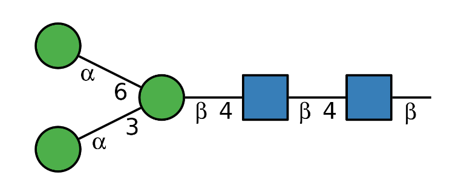
Reusing styles
Create a style object once and reuse it for multiple glycans.
glycans <- c(
core = n_core,
antenna = "Gal(b1-4)GlcNAc(b1-",
fucosylated = "Gal(b1-4)[Fuc(a1-3)]GlcNAc(b1-"
)
my_style <- style_glydraw(
node_size = 1.4,
edge_linewidth = 1.5,
node_linewidth = 1.5
)
draw_cartoon(glycans[[1]], style = my_style)
draw_cartoon(glycans[[2]], style = my_style)
draw_cartoon(glycans[[3]], style = my_style)Bundled styles
glydraw also provides presets based on common
glycan-drawing conventions.
draw_cartoon(n_core, style = style_glygen())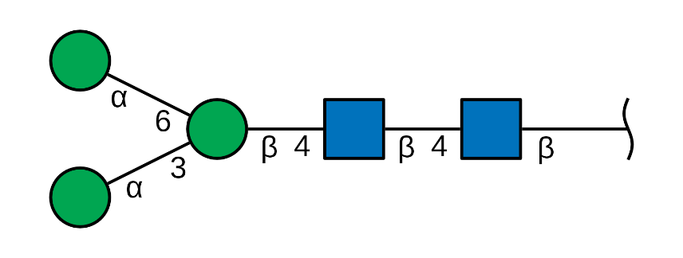
draw_cartoon(n_core, style = style_snfg())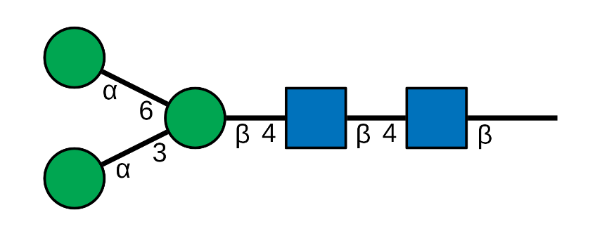
draw_cartoon(n_core, style = style_glycoworkbench())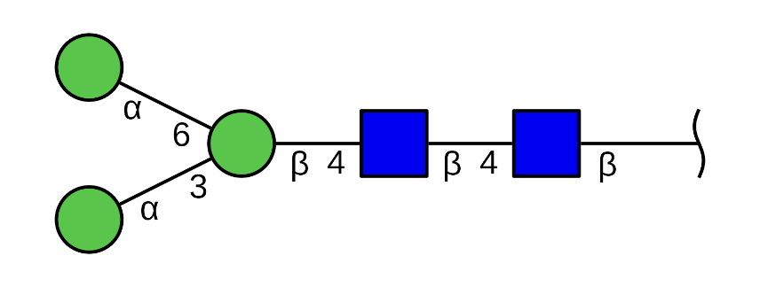
These styles can also be used with
draw_cartoon_sketch().
draw_cartoon_sketch(n_core, style = style_glycoworkbench())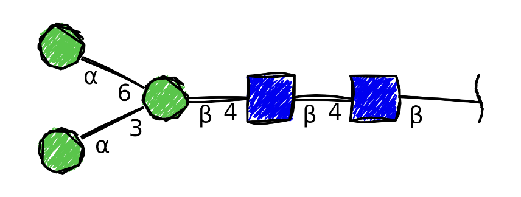
Node highlighting
highlight marks selected residue nodes. It is available
when structure is a
glyrepr::glycan_structure() object. Node indices match the
monosaccharide order in the printed IUPAC-condensed structure.
highlight_glycan <- glyrepr::as_glycan_structure(
"Gal(b1-3)[GlcNAc(b1-6)]GalNAc(a1-"
)
draw_cartoon(highlight_glycan, highlight = c(1, 3))
Save one cartoon
Use save_cartoon() when you already have one cartoon
object.
cartoon <- draw_cartoon(n_core, style = style_glydraw(red_end = "~"))
outfile <- file.path(tempdir(), "n-core.png")
save_cartoon(cartoon, outfile, scale = 2)
outfile
#> [1] "/tmp/RtmpjZjKNG/n-core.png"glydraw does not expose separate width and
height controls because each cartoon has a natural size
calculated from its glycan structure. scale preserves the
aspect ratio and relative symbol sizes.
Export many cartoons
Use export_cartoons() to draw and save a vector of
glycans in one call. The input can be a character vector or a
glyrepr::glycan_structure() vector.
glycans <- c(
core = "Man(a1-3)Man(b1-4)GlcNAc(b1-",
antenna = "Gal(b1-4)GlcNAc(b1-",
fucosylated = "Gal(b1-4)[Fuc(a1-3)]GlcNAc(b1-"
)
outdir <- file.path(tempdir(), "glydraw-cartoons")
suppressMessages(
cartoons <- export_cartoons(
glycans,
outdir,
file_ext = "png",
scale = 1.5,
style = style_glydraw(red_end = "~", node_size = 1.1)
)
)
list.files(outdir)
#> [1] "antenna.png" "core.png" "fucosylated.png"export_cartoons() creates dirname when
needed and returns the list of cartoons invisibly. File names come from
vector names when present. Unnamed inputs use sanitized IUPAC-condensed
structure text as file names, and duplicate names are made unique.